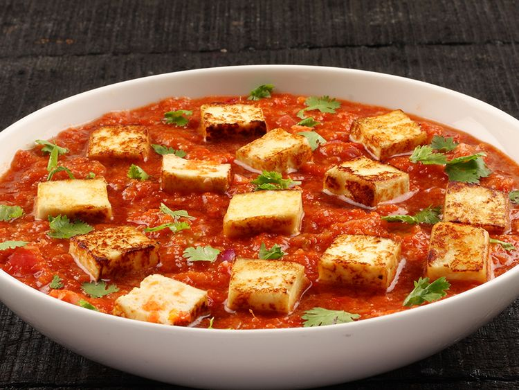

Recipe for Paneer Masala

Ingredients
- 250g Paneer (cottage cheese), cubed
- 1 cup Onion, finely chopped
- 1 cup Tomatoes, pureed
- 1/2 cup Capsicum, diced
- 1/4 cup Fresh Cream
- 2 tbsp Oil or Ghee
- 1 tsp Ginger-Garlic Paste
- 1 tsp Cumin Seeds
- 1 tsp Red Chili Powder
- 1/2 tsp Turmeric Powder
- 1 tsp Garam Masala
- Salt to taste
- Fresh Coriander Leaves for garnish
Steps
- Heat oil or ghee in a pan and add cumin seeds. Sauté until they splutter.
- Add finely chopped onions and cook until golden brown.
- Add ginger-garlic paste and sauté for a minute until the raw smell disappears.
- Stir in the pureed tomatoes, red chili powder, turmeric powder, and salt. Cook until oil separates.
- Add diced capsicum and cook until it becomes tender.
- Lower the heat, add cubed paneer, and mix gently. Allow paneer to absorb the flavors.
- Pour fresh cream and sprinkle garam masala. Mix well and let it simmer for a few minutes.
- Garnish with fresh coriander leaves.